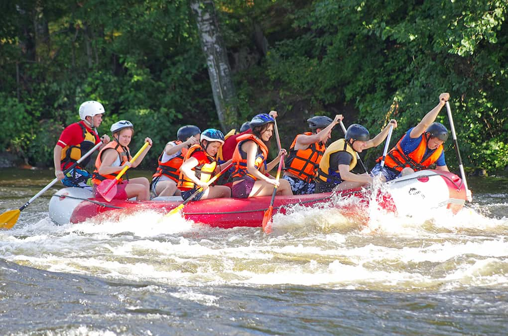
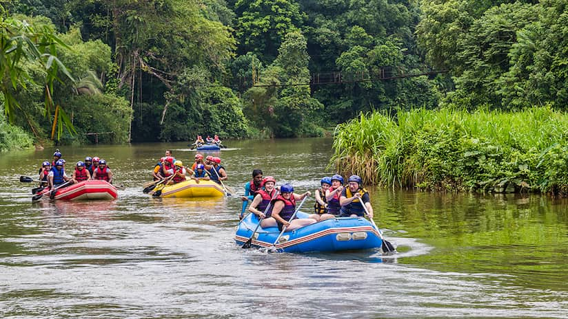

Our purpose is to deliver the most exciting rafting experience you ever had. You will find well instructed professionals, that will guide you and do their best to guarantee the best experience of your lives!


Our purpose is to deliver the most exciting rafting experience you ever had. You will find well instructed professionals, that will guide you and do their best to guarantee the best experience of your lives!
White Water Rafting was born from a simple idea: rivers are meant to be experienced, not just admired. What started as a small group of adventure lovers guiding friends down local rapids quickly grew into a professional operation dedicated to safety, excitement, and respect for nature.

Over the years, we’ve explored countless rivers, trained expert guides, and shared unforgettable moments with thousands of guests. Today, White Water Rafting stands for adrenaline, teamwork, and the thrill of navigating wild waters—always with safety and environmental responsibility at the core of everything we do.
